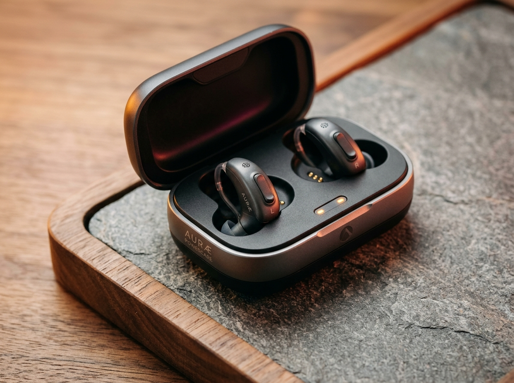

Entender o que você precisa
Queremos saber em quais momentos ouvir tem sido difícil. Seu histórico, seus exames e sua rotina ajudam a orientar a avaliação.
Cuidado auditivo em Recife
Na OTUS, o cuidado começa com uma conversa. Entendemos suas dificuldades, ajudamos na escolha do aparelho ideal e acompanhamos toda a sua adaptação, com atenção e sem pressa.
Agendamento direto pelo WhatsApp. Atendimento com hora marcada.
Conte com a OTUS
Escolher um aparelho é uma parte do caminho. Antes e depois, você conta com um atendimento próximo para orientar, tirar dúvidas e acompanhar cada passo.
Queremos saber em quais momentos ouvir tem sido difícil. Seu histórico, seus exames e sua rotina ajudam a orientar a avaliação.
Você conhece as opções ideais para o seu caso e tira suas dúvidas sobre tamanho, discrição, conforto e praticidade no dia a dia.
Os retornos são uma oportunidade para contar como você está se sentindo e fazer os ajustes necessários no seu ritmo.
Tecnologia & Conforto
A tecnologia auditiva se transformou. Hoje você conta com soluções miniaturizadas de alta fidelidade sonora, conectividade com smartphone e recarga rápida.

Projetados para proporcionar uma audição nítida em reuniões familiares, restaurantes e ao ar livre, suavizando ruídos indesejados e focando nas vozes com precisão.
Moldados sob medida e posicionados internamente no canal auditivo. Praticamente imperceptíveis no dia a dia, perfeitos para quem prioriza estética.
Design anatômico ultrafino que repousa atrás da orelha. Garante som amplo, ventilação natural e excelente conforto para uso prolongado.
Bateria recarregável de longa duração com controle facilitado pelo aplicativo no smartphone para ajuste de volume e programas sonoros.
A indicação do modelo ideal depende da avaliação auditiva e da anatomia do seu ouvido.
Consultar opções no WhatsAppPor que escolher a OTUS
Planejamos cada detalhe no polo médico de Recife para oferecer uma experiência acolhedora, pontual e sem estresse para você e sua família.
Vagas rotativas seguras dentro do Empresarial Albert Einstein para facilitar seu acesso sem preocupações com estacionamento na rua.
Prédio moderno com múltiplos elevadores, rampas e corredores amplos, garantindo facilidade de locomoção para todas as idades.
Sem salas de espera lotadas. O seu horário na Sala 616 é exclusivo para você conversar com calma, tirar dúvidas e ser ouvido sem pressa.
O cuidado continua após a entrega. Retornos periódicos de revisão e ajustes finos garantem que o aparelho continue perfeito na sua rotina.
Histórias Reais
Veja relatos de quem voltou a se comunicar com clareza e redescobriu o prazer das conversas em família e com amigos.
“Voltei a participar ativamente dos almoços de domingo. Antes eu me isolava porque tinha vergonha de pedir para repetirem tudo. O aparelho é tão discreto que quase ninguém nota que estou usando.”
“Acompanhei meu pai no atendimento. O que mais nos tranquilizou foi a paciência e a clareza para explicar cada etapa. Ele se adaptou muito bem e hoje recuperou a disposição para conversar.”
“Uso o aparelho conectado ao celular para chamadas e reuniões de trabalho. Ouvir as vozes nítidas sem esforço melhorou muito minha concentração no final do dia. Valeu cada minuto da avaliação.”
Dúvidas frequentes
Se você está pensando em procurar ajuda para sua audição, estas respostas podem tornar o primeiro passo muito mais tranquilo.
Converse com nossa equipeAgende um horário pelo WhatsApp. Na visita, vamos conversar sobre o que você percebe no dia a dia e conhecer seu histórico. Se você já tem exames recentes, avise a equipe para saber o que levar. Explicamos cada próximo passo com calma e você pode perguntar à vontade.
A indicação depende de uma avaliação individual. Se você percebe dificuldades para acompanhar conversas em família, aumenta muito o volume da TV ou nota mudanças na sua audição, conte isso à equipe para receber a orientação adequada.
Não. Formato, recarga, conectividade com celular e recursos de processamento variam conforme o modelo. A escolha sempre considera o resultado da avaliação, suas necessidades diárias e suas preferências de discrição.
O cérebro precisa de um período para reaprender a interpretar certos sons. Nossa equipe realiza orientações, retornos e ajustes finos para acompanhar esse processo e garantir seu conforto do primeiro dia em diante.
Sim. Informe o modelo que você utiliza e o que você gostaria de melhorar. A equipe poderá orientar sobre as possibilidades de avaliação, regulagem ou substituição para um modelo mais moderno.
Onde estamos
Agende sua visita e venha conversar com a gente em um ambiente acolhedor e privativo. Se precisar de orientações de trajeto, é só chamar no WhatsApp.
Empresarial Albert Einstein Rua Frei Matias Teves, 280 · Sala 616